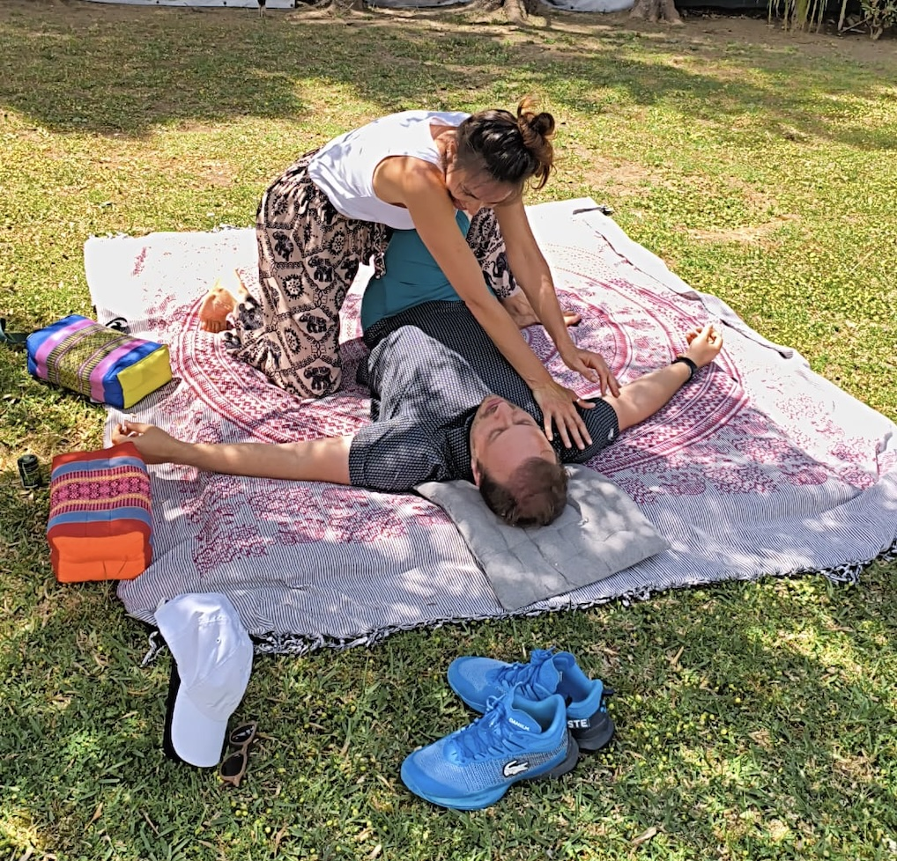

Jogas ténis ou padel. A rigidez acumula, a recuperação é lenta. O corpo nunca volta totalmente ao zero.
Marcar sessão
O padrão que se instala
"O ténis é assimétrico por natureza. Essa assimetria acumula-se em silêncio até aparecer como dor ou bloqueio."
O mesmo acontece no padel, no crossfit, na corrida. O esforço repetido cria padrões de tensão e rigidez que o corpo não consegue resolver sozinho. A recuperação fica incompleta. O rendimento começa a baixar. A lesão é uma questão de tempo.
Quero recuperar melhorPara quem é
Trabalho com alongamentos assistidos, pressão profunda e mobilização articular. Não é massagem de relaxamento. É trabalho real sobre os padrões de tensão que o desporto cria.
Com regularidade, o corpo recupera mais rápido, os movimentos tornam-se mais fluidos e o risco de lesão diminui.
Marcar sessão · €75O que muda
O corpo sai do estado de tensão acumulada. A recuperação entre sessões de treino ou jogo melhora.
Articulações e músculos libertam-se. Os movimentos tornam-se mais fluidos. O corpo volta ao alcance que tinha perdido.
A assimetria que o desporto cria começa a ser trabalhada. O lado mais tenso recebe atenção específica.
Com regularidade, o corpo responde melhor ao esforço. A tensão é gerida antes de se tornar dor ou bloqueio.
O que dizem
"Para alguém com o meu historial, isso não é pouca coisa."
"Havia ali alguém que sabia o que estava a fazer, atenta aos detalhes, preocupada em perceber o meu corpo. Saí relaxado, alinhado, mentalmente descansado com energia muito boa. Para alguém com o meu historial, isso não é pouca coisa."
Nuno
Padel federado · ex-voleibol alta competição · mais de 20 anos entre fisioterapeutas
"A Joana é TOP!"
Bruno
Designer criativo · yoga e movimento · corpo que exige e quer continuar
"Estava dorida e cansada, e saí completamente relaxada."
"Conheci a Joana num torneio de ténis, e desde então jogamos regularmente. Sabendo que ela conhece bem os músculos que mais sofrem neste desporto, resolvi experimentar. Confesso que as minhas expectativas eram nulas — não fazia ideia do que esperar. Mas foi uma surpresa fantástica. Estava dorida e cansada, e saí completamente relaxada."
Rita
Tenista veterana · incontáveis horas em court
Uma sessão de 90 minutos em Lisboa. Sem burocracia.
Falar comigo no WhatsApp90 min · €75 · Lisboa · joanaclarinha@icloud.com · Respondo em 24h.